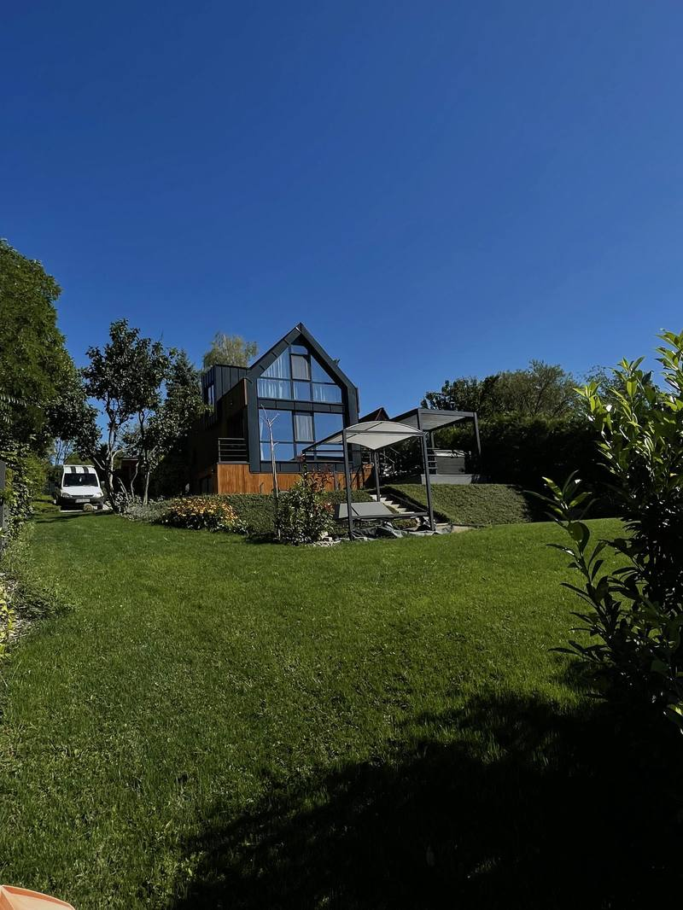

Győri csapat, egy felelőssel.
A Rapidkert kertépítéssel és öntözéstechnikával foglalkozik Győrben és a környező településeken. Azért dolgozunk így — egy csapatban, tervezéstől az átadásig —, mert azt láttuk, hogy a legtöbb csúszás és felesleges költség abból származik, hogy külön ember tervez, külön csapat burkol, és megint más szereli az öntözést. Senki nem felel az egészért.

Nem részmunkák sorozata, hanem összefüggő rendszer. Ez nem szemlélet kérdése — a sorrendet a technika kényszeríti ki.
Nem részmunkák sorozata — összefüggő rendszer.
végeredményért A tervező és a kivitelező ugyanaz a csapat. Ha valami nem stimmel, nincs kire mutogatni – mi oldjuk meg.
kevesebb bontás Az öntözőrendszer a gyep alá kerül, a burkolat alá szilárd alap. Ha a sorrend rossz, kétszer kell bontani – ez időben és pénzben is fáj.
fix ár A felmérés után pontosan látod, mi mennyibe kerül. Nem menet közben derül ki, hogy „ez még plusz”.
nem a vége Igény szerint gondozzuk a kertet és szervizeljük az öntözést. Nem tűnünk el, amikor kifizetted a számlát.
Egy kert akkor jó, ha úgy érzed, mindig is ott volt — és nem kell vele foglalkoznod.
Rapidkert Kft., GyőrA kert alulról fölfelé épül.
Amiért egy csapat
Minden réteg a következő alá kerül. Ha a burkolat előbb készül el, mint az öntözés csőhálózata, bontani kell. Ha a gyep előbb van, mint a vízelvezetés, megint bontani kell. Ez nem szervezési kérdés — ez a munka fizikája.
Külön tervezővel, külön térkövezővel és külön öntözőssel ezt a sorrendet valakinek össze kellene hangolnia. Nálunk nincs kit összehangolni: ugyanaz a csapat teszi le mindet, ugyanabban a sorrendben.
- 01 Egy terv, egy ütemterv
- 02 Egy felelős a kapcsolódásoknál
- 03 Nincs kétszeri bontás
- 04 Egy garancia a teljes munkára
Az építés sorrendje
Ez az ábra a saját munkarendünk. Nem minden kertben van mind az öt réteg — de amelyik benne van, annak ebben a sorrendben kell elkészülnie.

Ez a mérce.
Tereprendezés, gyep, sövény, burkolat és öntözés — egy csapattól, egy összehangolt terv szerint. Olyan kertet és rendszert építeni, ami magától teszi a dolgát, évekig.
Átlátható lépések, reális ütemterv.
Minden fázisnál tudod, hol tartunk és mi jön.
Felmérés
Kimegyünk, megnézzük a terepet, a talajt és a tájolást, megmérjük a vízforrás nyomását. Ingyenes, kötelezettség nélkül.
Terv, ajánlat
Elkészítjük a kert elrendezését, az öntözés zónakiosztását, majd tételes, fix árajánlatot adunk.
Alapmunka
Tereprendezés, szintezés, alapozás, vízelvezetés. Ami nem látszik, de mindent eldönt.
Kivitelezés
Burkolat, öntözés, növények, gyep – összehangolt sorrendben, hogy ne kelljen kétszer bontani.
Átadás
Beüzemelünk, betanítunk, átadunk. Igény szerint utána is gondozzuk a kertet.
Győr és 40 km-es vonzáskörzete. Nagyobb projektnél távolabb is.
Helyi csapat — és ez nem marketingszöveg.
A legtöbb munkánk Győrben és a közvetlen vonzáskörzetében van: Győrújbarát, Győrújfalu, Abda, Nyúl, Écs, Pannonhalma, Töltéstava, Kisbajcs, Vámosszabadi, Gyirmót, Ménfőcsanak. Ez azt jelenti, hogy ha az átadás után gond van, nem két hét múlva érünk oda. Nagyobb projektnél Mosonmagyaróvár, Csorna, Kapuvár és Pápa térségébe is kimegyünk.
Három szolgáltatás, egy szemlélet
07 — Kezdjük el
Beszéljük át a kertedet.
Kérj egy ingyenes helyszíni felmérést. Megnézzük a terepet, meghallgatjuk, mit szeretnél, és megmutatjuk, mi minden hozható ki belőle — kötelezettség nélkül.